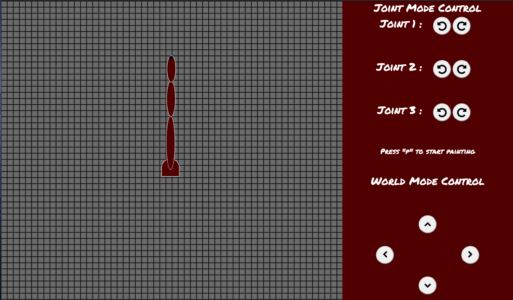
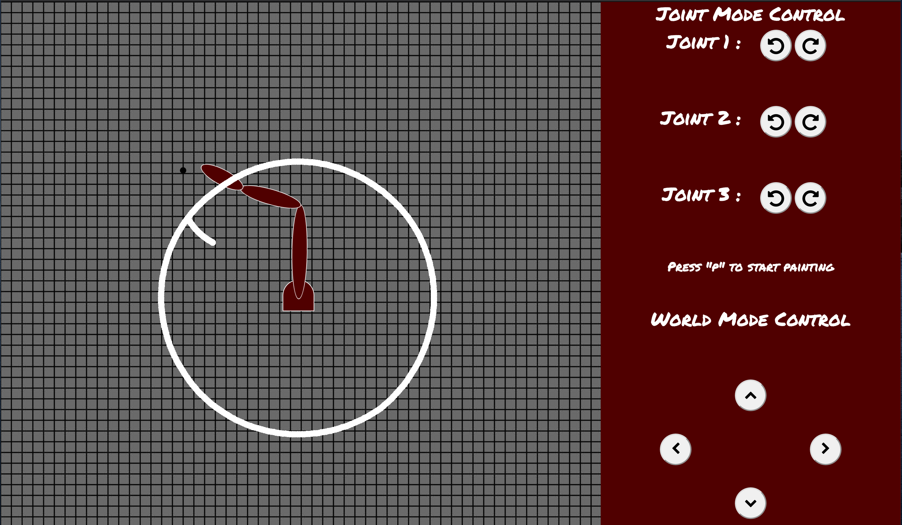

BACK
DEMO
Member Task Allocation
Julian Tiu, Alexandra Wilson, and Drew Carr built forward from the last project’s code to implement the inverse kinematic functions for this project.
Trevor Kay, Luis Davila, and Murtaza Hakimi contributed to the report, task allocation, team meeting log, and modification of the html framework with the contents of these sections.
Meeting Log
Most meetings happened informally throughout the two weeks of the project via Groupme. Julian began again with setting up the foundation for what was needed programming wise around Oct. 17th. He kept us updated on the progress.
Afterwards more work was done to finish up the code and help with bugs by Alexandra and Drew in cooperation with Julian across Oct. 19th - 23rd
Report and logging happened throughout the course of the project by the remaining members.
Source Code
Source Code: https://github.com/csce452/project/tree/master/public/project2
Compiling Instructions: No compilation is necessary, as the demo runs in a browser and can be tested at https://csce452.firebaseapp.com/project2/project2.html
Screenshots


Report
Report